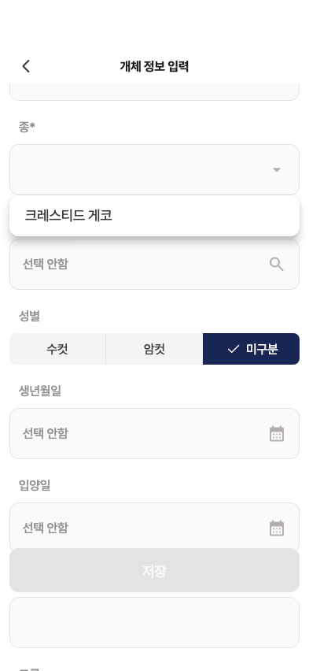
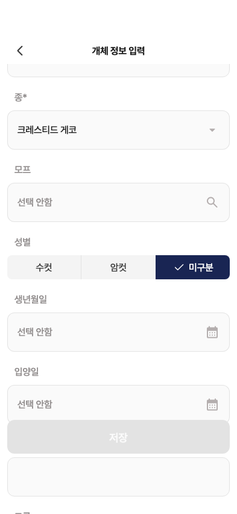

28 · 종 선택 드롭다운
27번 승인 기록 완료. 현재242 제품 위젯과 원본 비교입니다.
위치·너비·행 높이·모서리·글자 크기·색상 일치
수정 제안: 자간 −0.32 → −0.36
그림자 수치 일치는 미판정
사용자 확정대로 크레스티드 게코만 표시합니다. 따라서 앱 메뉴 높이는52pt이며 원본의7행316pt와 다릅니다. 다른 종과 직접 입력은 추가하지 않습니다.
Figma · 여러 종 예시 현재 제품 위젯 · 크레스티드 한 항목
현재 제품 위젯 · 크레스티드 한 항목
선택 후 · 선택 취소 시에도 값 유지 확인

빈 이름 상태의 저장 비활성, 기본 미구분 선택은 이전 승인 정책을 유지합니다. 원본과 첫 메뉴행 글자y0.5pt차이는 구분선 유무에 따른 중심 차이입니다.
수치·동작·검증 상세